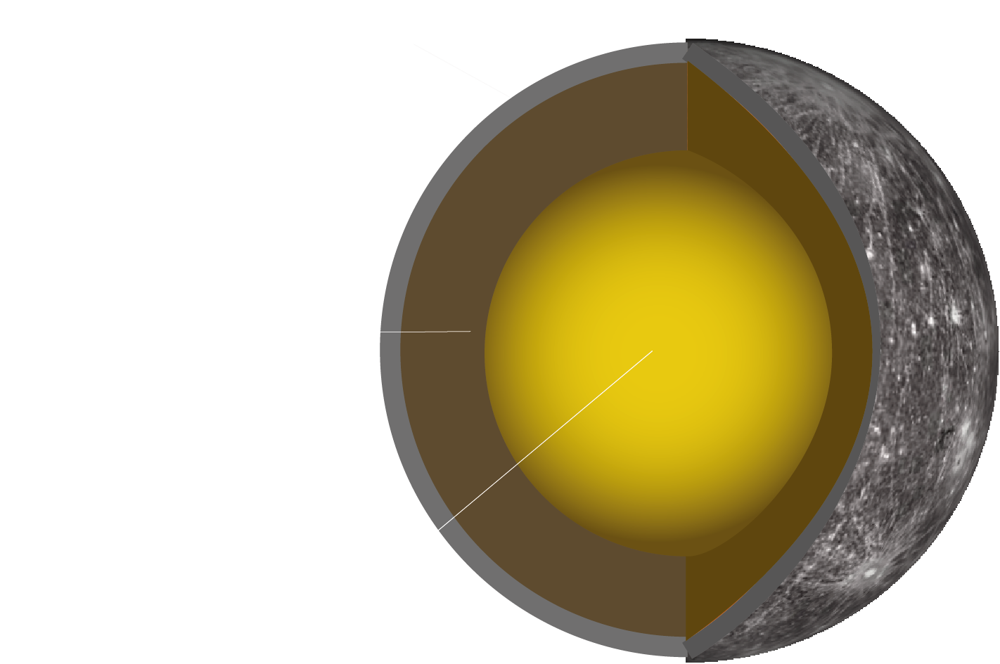
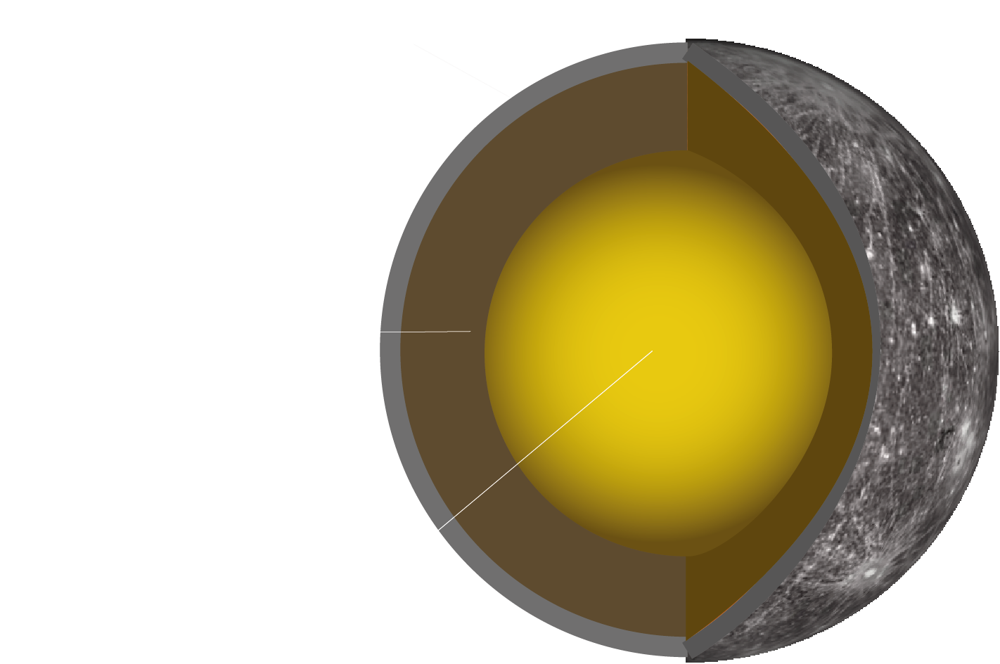

What would it be to live on a different planet?
MERCURY


 

| EQUATORIAL DIAMETER | 4879 km |
|---|---|
| ROTATION PERIOD | 59 day |
| SOLAR ORBIT PERIOD | 88 days |
| SURFACE TEMPERATURE | 167 C |
| TEMPERATURE-SUMMER | 473 C |
| TEMPERATURE-WINTER | -183 C |
Life on Mercury could be possible, but the risk is immense, as the closest planet to the sun, as you might realize, gets quite hot. Side that is turned to the sun reaches +430 degrees Celsius, but the side that stays in the dark is really cold – 180 degrees Celsius. So, it would be a climate nightmare.
The only possible place for a base camp on Mercury would be near its Ice caps. But it would have to be placed perfectly in comfort zone, or you will fry or freeze to death. Certainly, water Ice caps would help to start colony there.
Mercury is seismically active, but has no tectonic plates, so you would feel the ground rumbling, but not see a crack from it.
There is no atmosphere, so cosmic radiation is at full force and meteors won’t be stopped by anything.
On Mercury you can see lots of impact craters in different sizes.
Gravity on Mercury would be 38% of Earth`s, so you could jump 3 times higher and lob 3 times heavier equipment, but you must remember that inertia and velocity stays the same as it would be thrown on Earth, so you might get knocked out by heavier objects flying towards you.